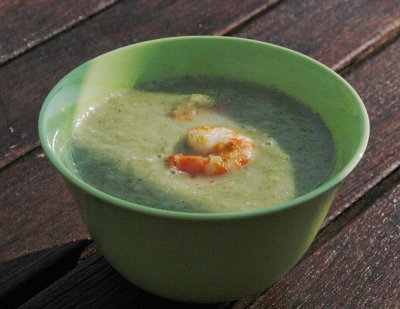

| Vorspeise oder Hauptgericht für 2 Personen: | |
| 600 g | Krevetten |
| 200 g | Broccoli |
| 1 grosse | Zwiebel |
| 1/4 | Knollensellerie |
| 20g | Butter |
| 0.5 l | Bouillon |
| Muskatnuss, frisch gerieben | |
| Olivenöl | |
| 1/2 Bund | Kerbel |
| 2 | Knoblauchzehen |
| schwarzer Pfeffer aus der Mühle | |
| Meersalz | |
| Mehl | |
Zubereitungszeit: ca. 25 Minuten, Kochzeit 30 Minuten
Für die Broccolisuppe die Broccoliröschen waschen, Stiele etwas kürzen und schälen. Die Zwiebel fein hacken, Sellerie in kleine Würfel schneiden.
Bouillon zubereiten.
Alles in der Butter kurz andünsten und mit der Bouillon ablöschen. Zirka 10 Minuten bei kleiner Hitze köcheln lassen, bis das Gemüse gar ist. Mit Meersalz, Pfeffer aus der Mühle und einer Prise frischer Muskatnuss würzen.
Die Suppe mixen oder durch ein Sieb fein pürieren. Den frischen Kerbel fein schneiden und die Hälfte der Kräuter zusammen mit etwas Olivenöl unter die Suppe ziehen. Suppe beiseite stellen (und erst kurz vor dem Anrichten nochmals kurz aufkochen).
Die Krevetten unter fliessendem kalten Wasser waschen, trocken tupfen und zur Seite stellen.
Die Knoblauchzehen schälen und halbieren. Das Olivenöl in einer kleinen Bratpfanne erhitzen und den Knoblauch darin goldbraun andünsten.
Die Krevetten salzen und pfeffern, mit etwas Mehl bestäuben und im Knoblauchöl auf jeder Seite etwa 1 Minute anbraten.
Die Broccolisuppe kurz aufkochen, in vorgewärmte Teller giessen, Krevetten dazu geben und sofort mit den restlichen Kräutern garniert servieren.
Migros, Rezeptbroschüre
Hat am 31.8.2008 ausgezeichnet geschmeckt. Die Mengenangabe war für 4 Personen angegeben. Das ist aber klar unsinnig. Korrigiert auf 2 Personen. RE
@LINKBACK_TAG@ @WAKELOCK@